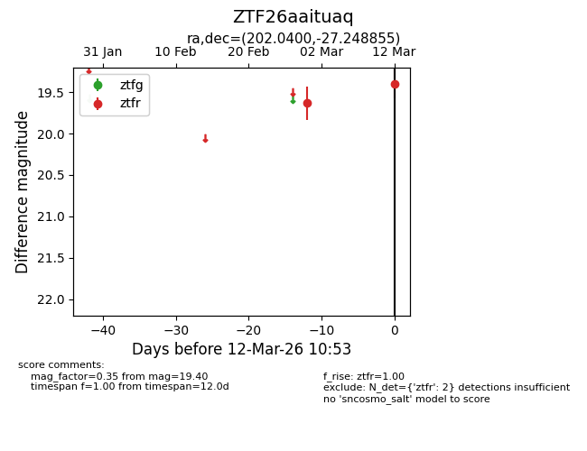
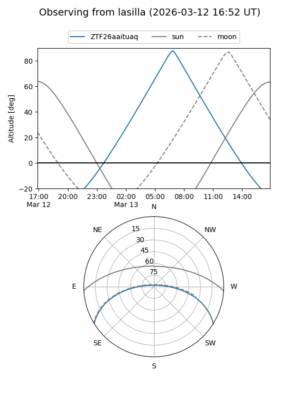
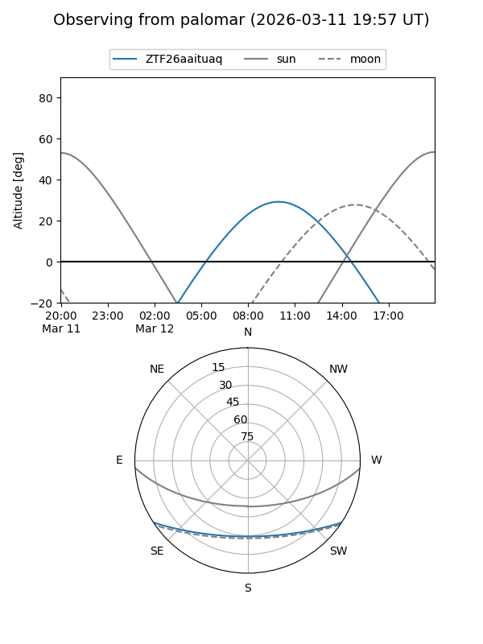

ZTF26aaituaq
Target ZTF26aaituaq at 2026-03-12 10:55
Aliases and brokers:
FINK: link
Lasair: link
ALeRCE: link
alt names
ZTF26aaituaq (ztf,fink_ztf)
Coordinates:
equatorial (ra, dec) = 202.0400,-27.24886
equatorial (HMS+DMS) = 13:28:09.59,-27:14:55.88
galactic (l, b) = (312.8924,+34.91166)
Flags:
Photometry:
last ztfr=19.40
2 ztfr detections
Lightcurve

Visibility


Additional plots